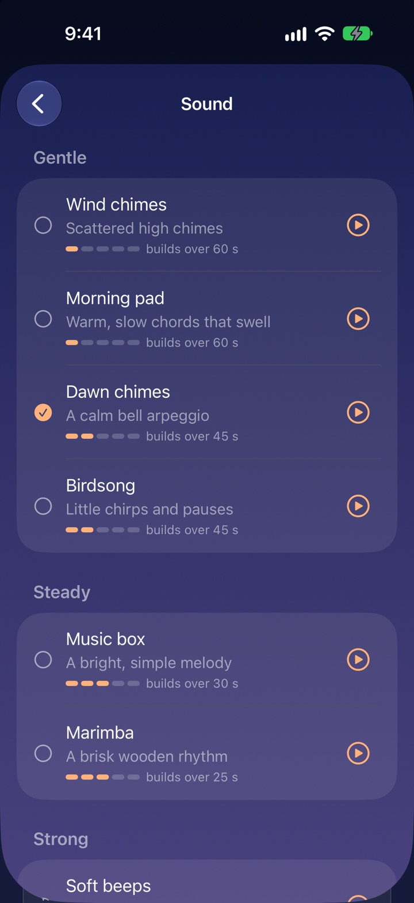
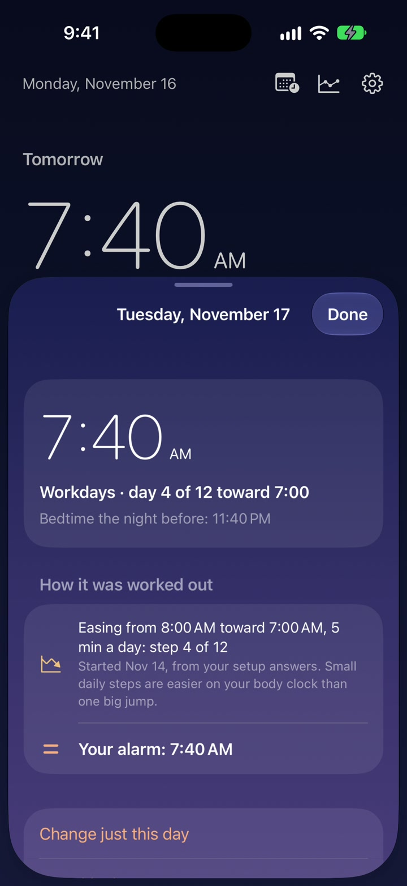

Becoming a morning person
Get up earlier without feeling wrecked for a week.
7:40 Day 4 of 12 toward 7:00A smarter, gentler alarm for iPhone
Slowdawn moves your alarm a few minutes a day, so your body has time to catch up. It plans around weekends, clock changes and jet lag on its own. You just wake up.
Free for 14 days.
Never charged automatically.
No tracking. No accounts. No servers. Your alarms, your sleep and your location stay on your iPhone. Privacy policy
How it works
When you need to be up, and when you wake up now. Takes about a minute.
Your alarm moves a few minutes a day. Small changes are much easier on your body than one big jump.
The next two weeks of alarms are always set. Nothing to remember.
Based on well-supported sleep research: Sleep Foundation · CU Boulder · CDC
Who it's for
If your mornings change at all during the year, Slowdawn makes the change easier. Each dot is a morning.
Get up earlier without feeling wrecked for a week.
7:40 Day 4 of 12 toward 7:00Get used to the new time before day one.
7:15 Day 3 of 6 for New jobStart shifting before you fly. Land closer to local time.
7:30 In London · usual +30The hour gets spread over a week, automatically.
6:56 Clock change, 5 of 7A little lie-in, without a brutal Monday.
7:52 Weekends · Sunrise +5Eased back into your routine, not dropped into it.
7:20 Easing back, 2 of 3Real alarms
Slowdawn sets its own alarms, so you can turn off the ones in the Clock app. They ring even when your phone is on silent or in Sleep mode.
Pick a sound that suits you, from soft chimes that build up slowly to a loud beep for heavy sleepers.

No surprises
Tap any morning to see how Slowdawn picked that time. The week ahead is always on the home screen.

Pricing
$0
Forever
$9.99 a year
or $1.99 a month · or $19.99 once
Everything in Free, plus planning for the rest of your life.
US prices. Subscriptions can be cancelled any time in iPhone Settings.
Slowdawn is on the App Store now, for iPhone with iOS 26 or later.